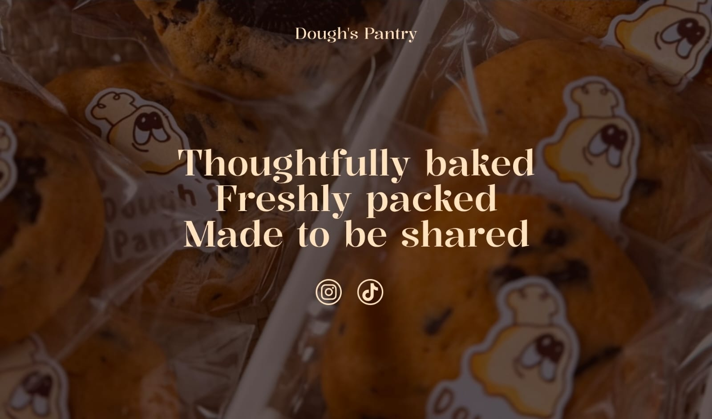

Landing page bergaya e-commerce yang dirancang khusus untuk memamerkan katalog produk dan identitas merek bisnis kue buatan rumah (homemade cookie business).
Mengutamakan pengalaman pengguna (UI/UX) yang hangat dan minimalis agar calon pembeli dapat langsung fokus pada produk yang ditawarkan.